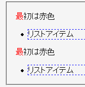
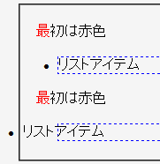

擬似要素を含む要素の直後にul, ol要素が存在するとき、それらのリストアイテムの内容物が親（ul, ol）要素のマージンを無視して表示される。ただし、最初に現れる擬似要素を含む要素に続くリストでは起こらない。
<style type="text/css">
p.ex:first-letter {
color: #ff0000;
}
li {
border: 1px dashed #0000ff;
}
</style>
<p class="ex">最初は赤色</p>
<ul><li>リストアイテム</li></ul>
<p class="ex">最初は赤色</p>
<ul><li>リストアイテム</li></ul>
最初は赤色
最初は赤色
ボーダーを設置して、li要素のボックスの状態がわかるようにしています。
Moz1.0.1での表示（標準モード）
WinIE6.0での表示（標準モード）
ul, ol要素にボーダーを設定するとこのバグを回避することができます。ただし、border-styleをnoneやhiddenにした場合は回避できません。
<p class="ex">最初は赤色</p> <ul><li>リストアイテム</li></ul> <p class="ex">最初は赤色</p> <ul style="border:1px solid #ff00ff;"> <li>リストアイテム</li></ul>
最初は赤色
最初は赤色
WinIE6.0では標準・互換モードともに不具合の発生が確認されました。